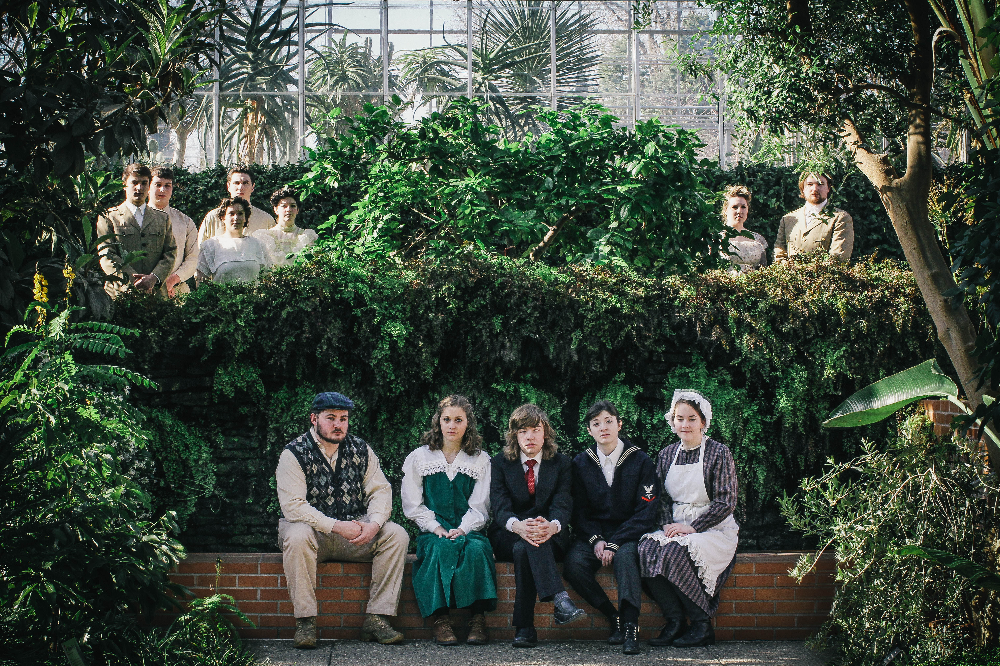
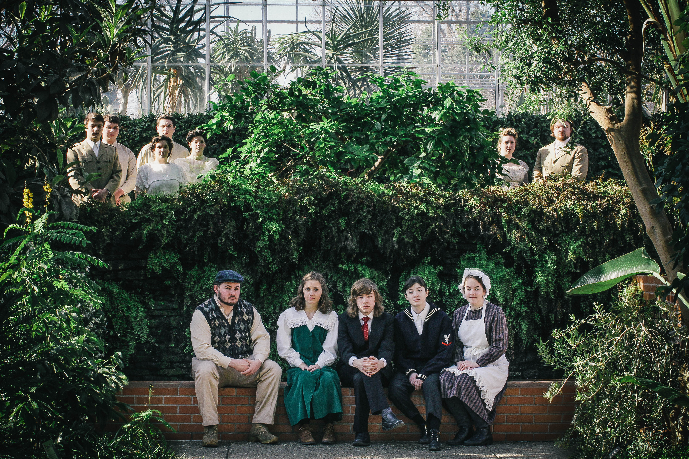
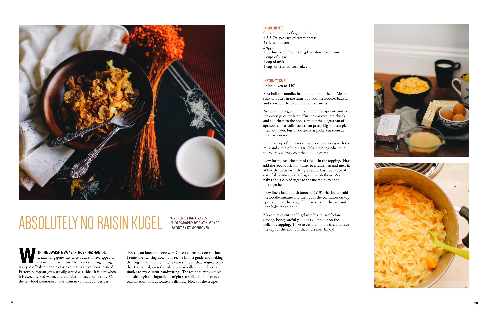
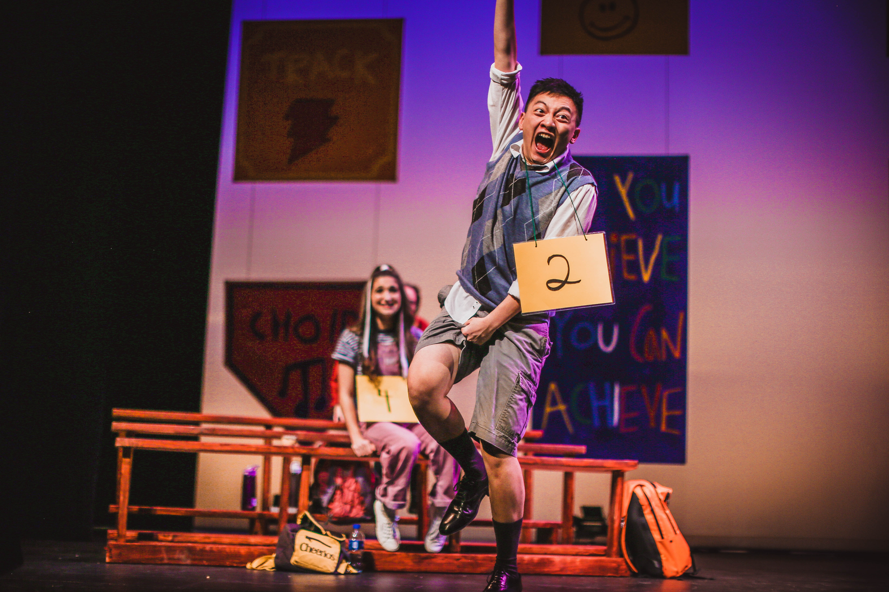
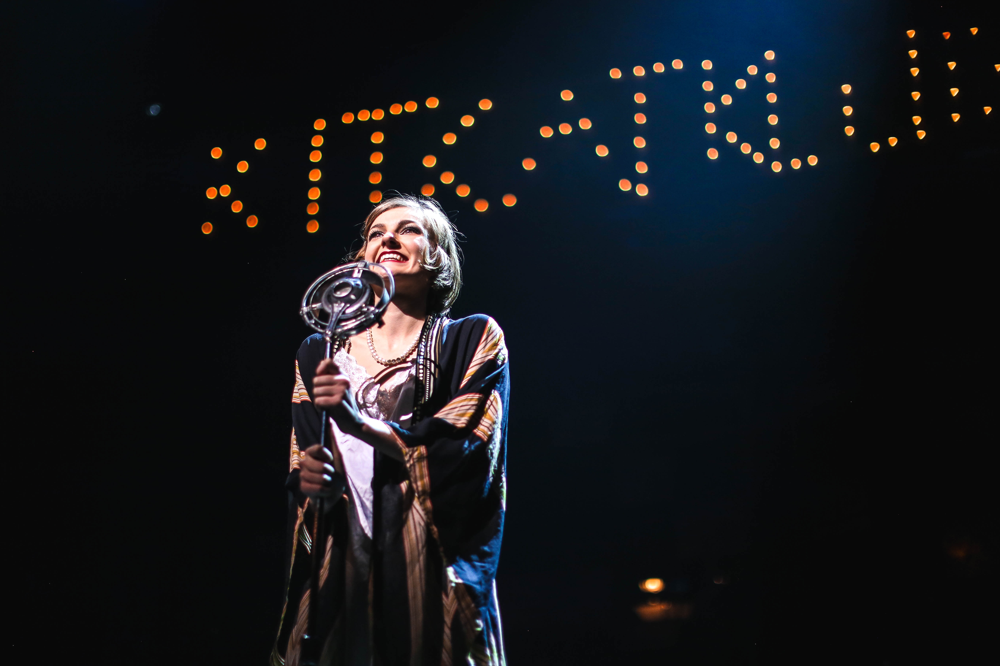
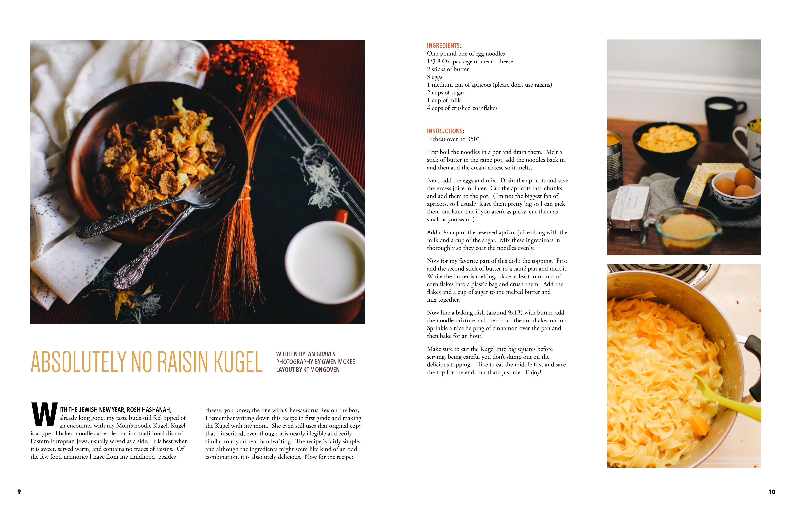
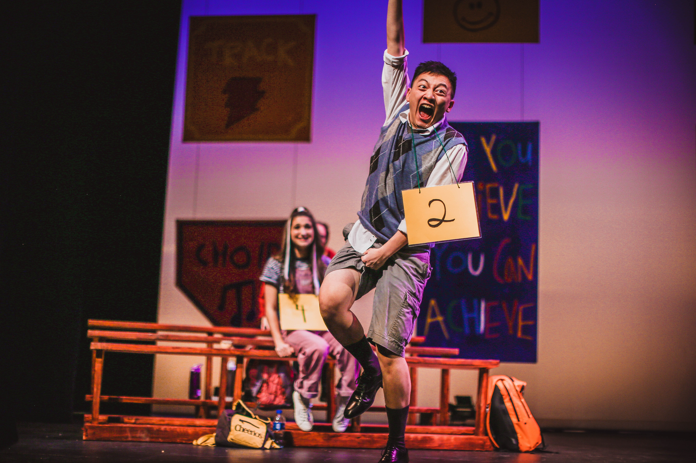
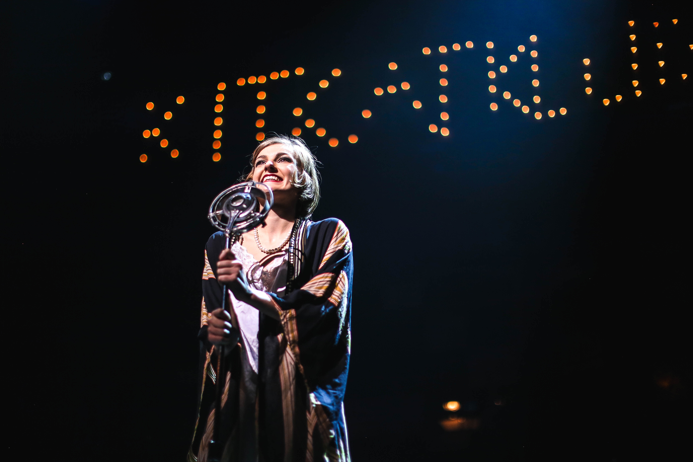
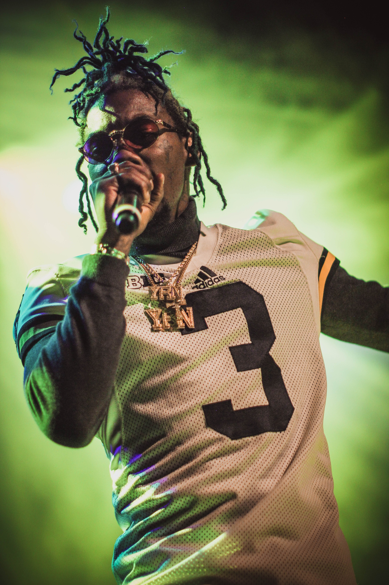
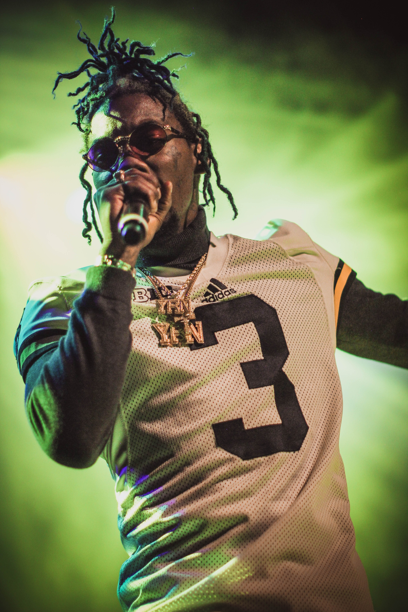

Other Images
My second favorite medium to work with is, again, people, but this time on stage. Photographing people in their element, whether it is theater, dance, concerts, or mixed performances (like Groove), allows me a safe space to capture movement, expression, and immersion. In a way, I believe photographing performances is also natural light photography, as I have no control over what the lighting is like, and must adjust accordingly. I try to let bright stage lights and the emotion of the talent shine through in my photography. I love to watch the passion each person has on stage.
I love that, on stage, I need to predict an actor or artists’ movements, and get in the correct position to photograph their movements. Additionally, stage photography requires constant adjustment of camera settings, and detailed attention to the sharpness of the shot (something very difficult in low light). Getting the chance to photograph people when they are performing is a true pleasure. I am lucky to be doing it. I hope you enjoy my photos!


 


 







 
